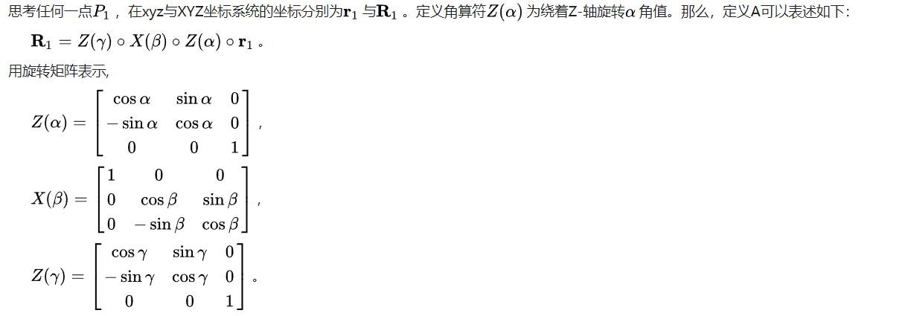
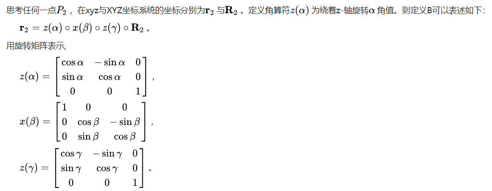
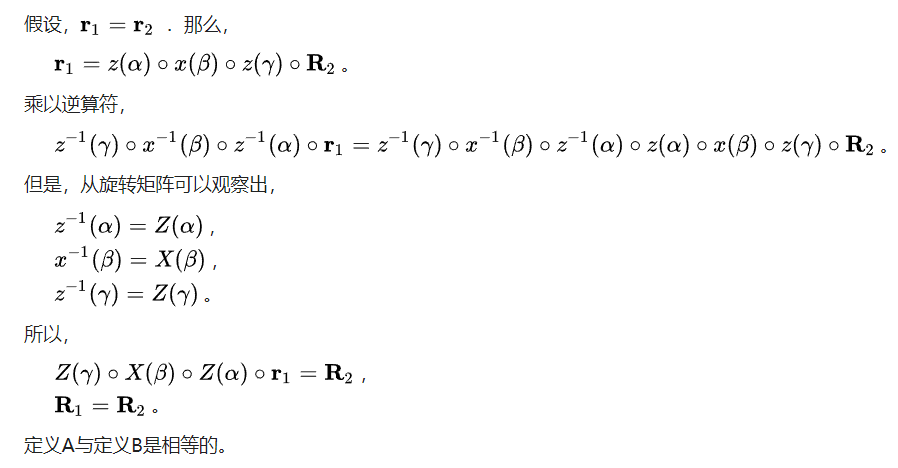
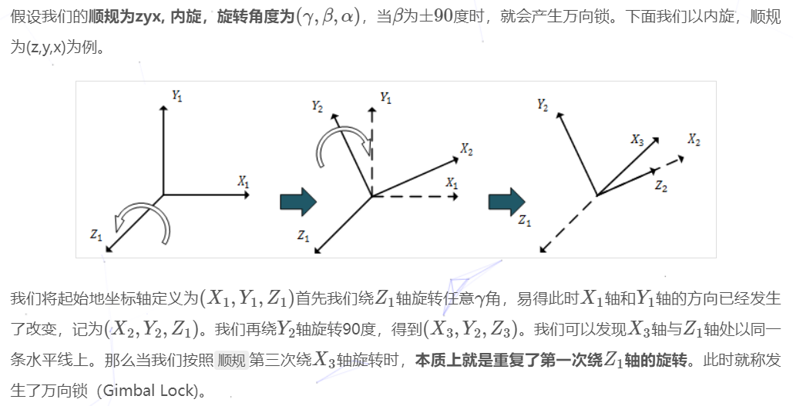

1.定义
- 静态定义: 欧拉角用三个角度值表示一个oritentation
- 动态定义： 欧拉角将一次旋转，或者说将一个角位移表示为绕着三个互相垂直的旋转序列
2.内旋与外旋
动态定义中的旋转有两种方式，内旋与外旋
- 内旋：绕着刚体自身的体轴进行旋转
- 外旋: 绕着一个固定坐标系旋转
内旋与外旋是等效的，只要按照相反的顺序进行旋转 证明：   
欧拉角一般具有两大类表示方式,每类按照旋转次序的不同分为6小类:
(经典欧拉角)Proper Euler angles 第一次与第三次旋转轴相同 (z-x-z,x-y-x, y-z-y, z-y-z, x-z-x, y-x-y)
(泰特布莱恩角)Tait–Bryan angles 三次旋转轴都不同 (x-y-z,y-z-x, z-x-y, x-z-y, z-y-x, y-x-z)
3.术语

4.万向节死锁(Gimbal Lock)
4.1定义与产生原因
对于一个欧拉角表示的内旋，如果第二次的旋转角度为±90度,会导致第三次与第一次的旋转轴平行，最终导致第一次与第三次旋转的效果相同,使物体丢失了一个自由度

4.2.解决
1.限制旋转角度，避免第二次转±90度 2.四元数
参考
- 3D数学基础：图形和游戏开发第2版
- wiki
- https://hideoninternet.github.io/2020/02/17/36f31d81/
- wiki